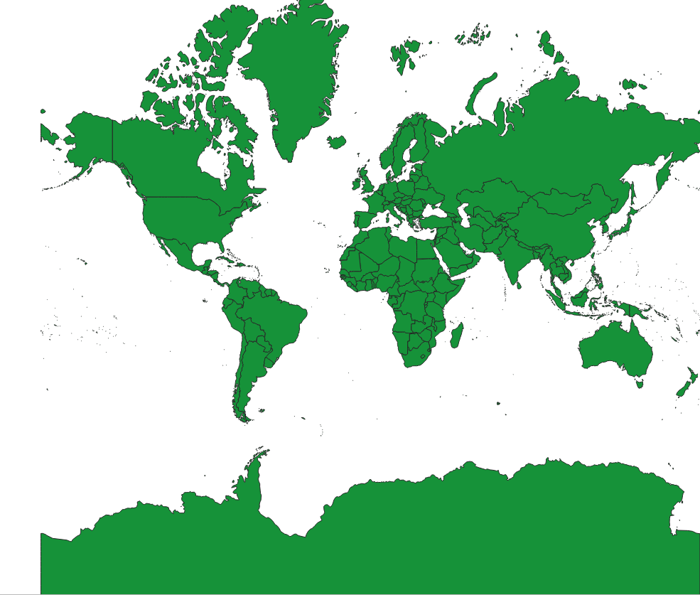
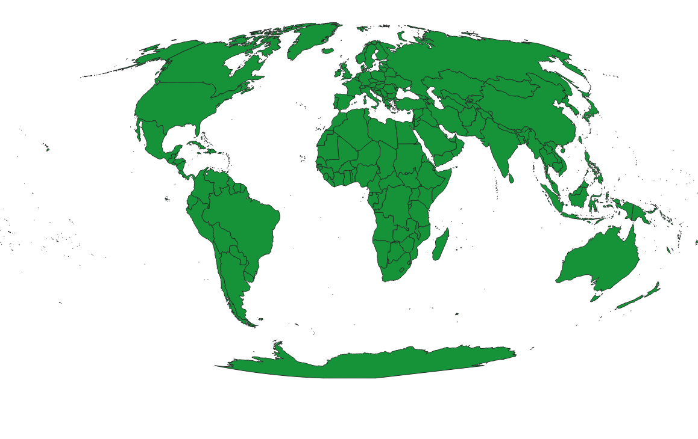
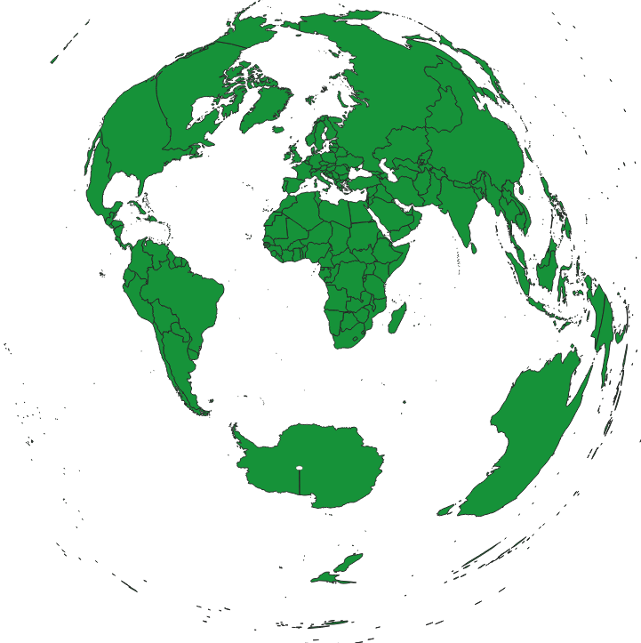
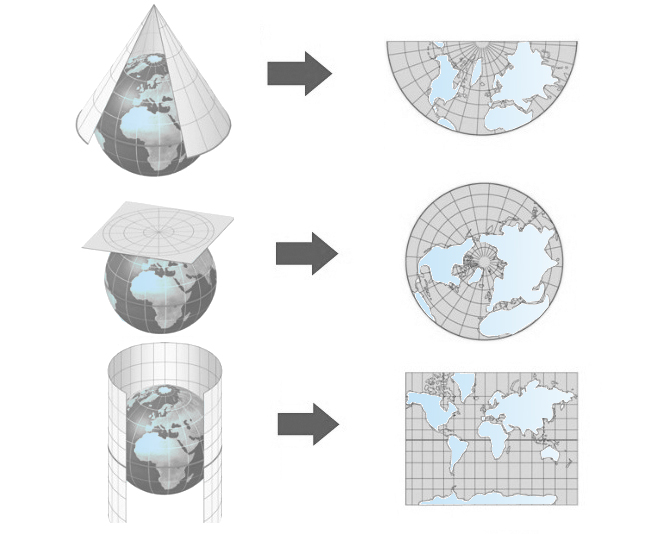
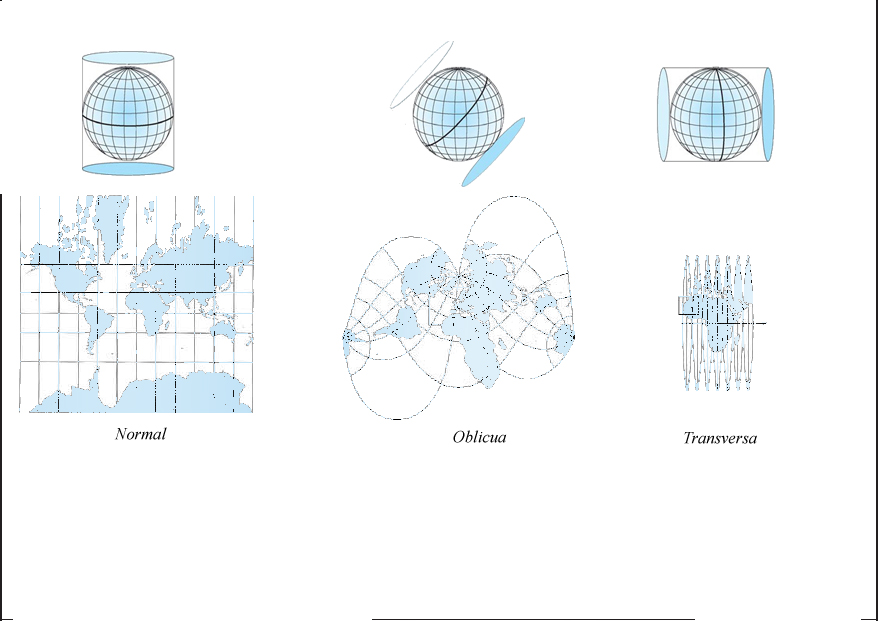
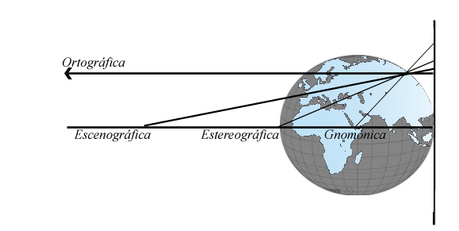
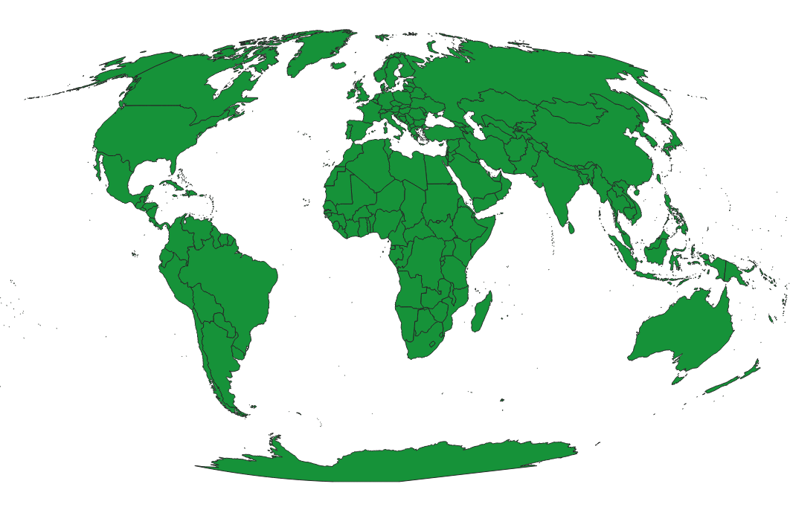
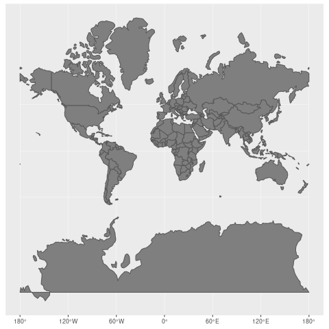

Tipos de Proyección
Las proyecciones se pueden clasificar en función de:
Las propiedades que conserven
- Proyecciones conformes: Como Mercator, conservan la forma local, esenciales para navegación, pero sacrifican las áreas.
- Proyecciones equivalentes: Como Peters o Mollweide, conservan las proporciones reales de las áreas, útiles para representaciones globales justas.
- Proyecciones equidistantes: Son ideales para medir distancias desde un punto central, como en los mapas de rutas de vuelo.
| Mercator | Mollweide | Equidistante |
|  |  |  |
La superficie auxiliar con la que se realiza la proyección
Se puede envolver la tierra o parte de ella con un cono, un cilindro o simplemente hacer plano tangente y proyectar sobre él.

Tangencia de la superficie auxiliar
La tangencia puede hacerse por un paralelo, por un meridiano, o por donde sea más conveniente…

Punto desde el que se proyecta
Se puede proyectar desde el centro de la tierra, desde el punto diametralmente opuesto, desde una distancia conocida o desde el infinito.


